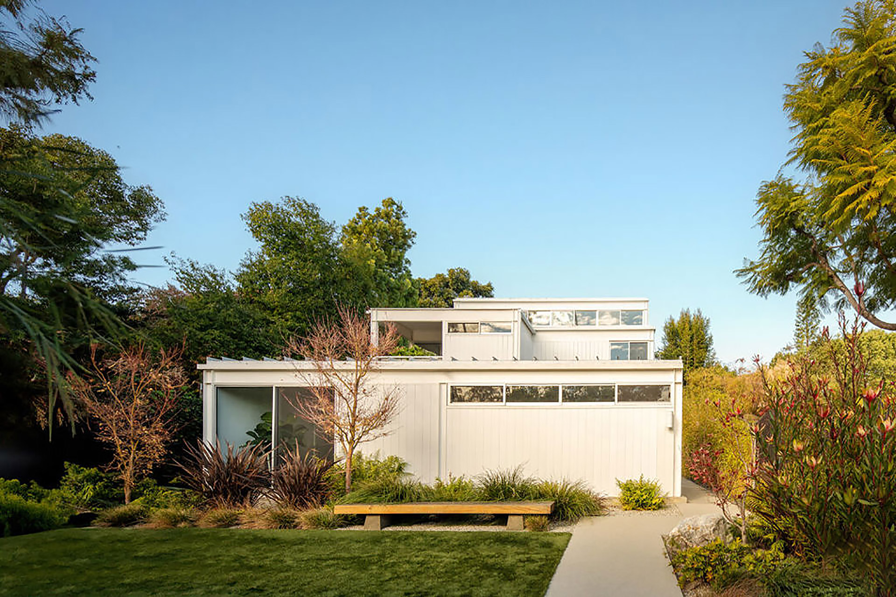

↗
استراتژی کسبوکار
تبدیل هدفهای پراکنده به نقشه راهی روشن، قابلاندازهگیری و اجرایی.
بیشتر بدانید ←از طراحی مسیر تا اجرای راهکارهای دیجیتال، کنار شما هستیم تا کسبوکارتان هوشمندتر، منظمتر و آماده رشد باشد.
هر کسبوکار مسیر خودش را دارد. راهکار را با توجه به هدف، منابع و نیاز واقعی شما طراحی میکنیم.
تبدیل هدفهای پراکنده به نقشه راهی روشن، قابلاندازهگیری و اجرایی.
بیشتر بدانید ←طراحی تجربههای دیجیتال ساده و کاربردی برای ارتباط بهتر با مشتریان.
بیشتر بدانید ←شناسایی گلوگاهها و سادهسازی کارها برای استفاده بهتر از زمان و منابع.
بیشتر بدانید ←ما باور داریم رشد پایدار از شناخت درست مسئله شروع میشود. پیش از هر راهکار، به حرف شما گوش میدهیم، شرایط را میسنجیم و برای رسیدن به نتیجه برنامهریزی میکنیم.
این بخش برای نمایش پروژههای واقعی شما آماده شده است؛ نمونههای زیر محتوای نمایشی قالب هستند.
نظرها و نامهای این بخش نمونهاند؛ پیش از انتشار با بازخوردهای واقعی و دارای اجازه انتشار جایگزین کنید.
از همان جلسه اول، مسیر پروژه روشن بود. گزارشها منظم و تصمیمها بر اساس نیاز واقعی کسبوکار گرفته میشد.

ارتباط شفاف و برنامه اجرایی مرحلهبهمرحله باعث شد بدانیم چه چیزی، چه زمانی و با چه هدفی انجام میشود.

بهجای پیشنهادهای پیچیده، راهکاری متناسب با منابع ما ارائه شد و اولویتها کاملاً مشخص بودند.

پروفایلها نمایشیاند و برای نشاندادن چیدمان تیم طراحی شدهاند.
استراتژی و برنامهریزی
پروفایل نمونهطراحی تجربه دیجیتال
پروفایل نمونهمدیریت پروژه
پروفایل نمونهقیمتها و جزئیات زیر نمونه طراحی هستند؛ مبلغ و تعهدات واقعی باید تعیین شوند.
برای کسبوکارهایی که به یک نقطه شروع روشن نیاز دارند.
برای تیمهایی که آماده اجرای یک برنامه منسجم هستند.
برای پروژههایی با نیازها و فرایندهای ویژه.
پاسخها نمونهاند و با خدمات واقعی قابل ویرایش هستند.
سؤال دیگری دارید؟ با ما تماس بگیرید ←با ثبت درخواست و گفتوگوی اولیه برای شناخت هدف، محدودیتها و اولویتهای پروژه.
بله؛ دامنه کار پس از بررسی نیاز و منابع هر کسبوکار مشخص میشود.
زمانبندی به دامنه و پیچیدگی پروژه وابسته است و پیش از شروع مشخص میشود.
گزارشها و نقاط کنترل در ابتدای همکاری توافق میشوند.
مطالب آموزشی کوتاه برای برنامهریزی، تجربه مشتری و بهبود فرایندها.

01 / STRATEGYاز هدفگذاری تا اولویتبندی کارها، با یک چارچوب ساده شروع کنید.
مطالعه مقاله ←نقاط تماس مهم را پیدا کنید و بهبود را از مسئلههای واقعی آغاز کنید.
مطالعه مقاله ←چند علامت ساده که نشان میدهد وقت بازبینی روش کار رسیده است.
مطالعه مقاله ←در هر مرحله میدانید کجا هستیم، چه کاری انجام میشود و قدم بعدی چیست.
نیاز، هدف و شرایط فعلی شما را بررسی میکنیم.
راهکار و برنامه اجرایی متناسب را مشخص میکنیم.
گامبهگام پیش میرویم و نتیجه را میسنجیم.
کمی درباره نیازتان بگویید. برای بررسی اولیه و گفتوگو درباره مسیر مناسب با شما تماس میگیریم.
راههای ارتباطی و ساعات پاسخگویی را میتوانید در این بخش قرار دهید.